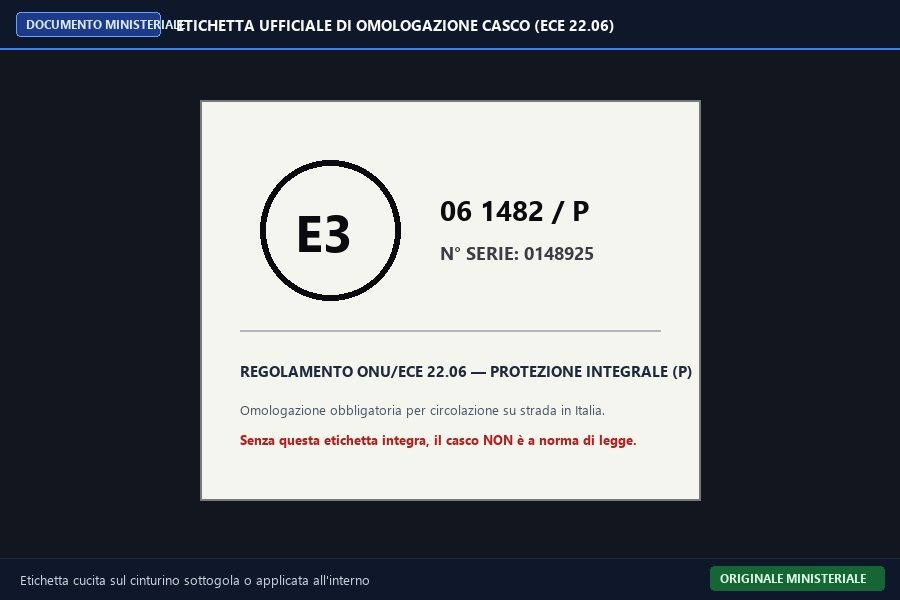
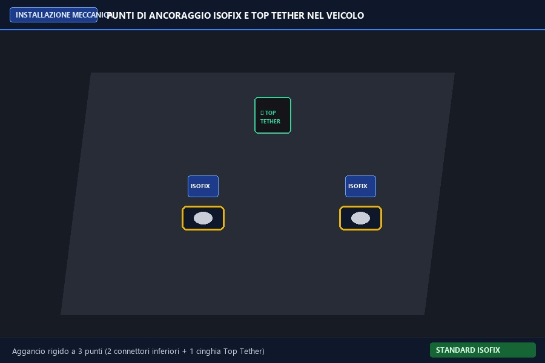
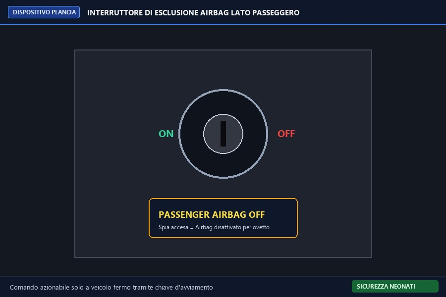
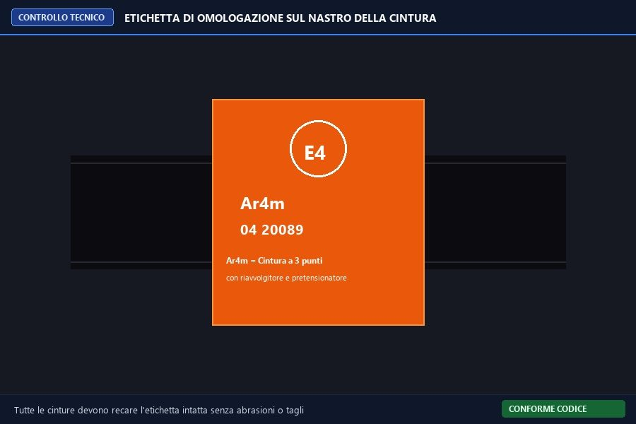
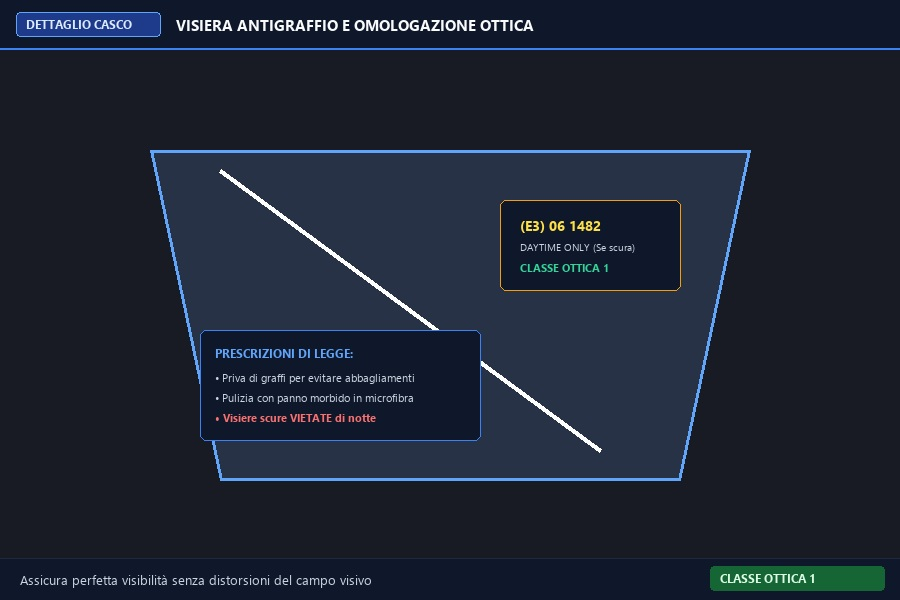
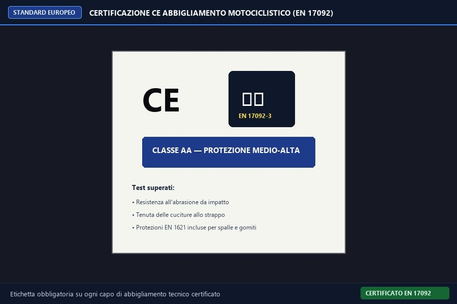
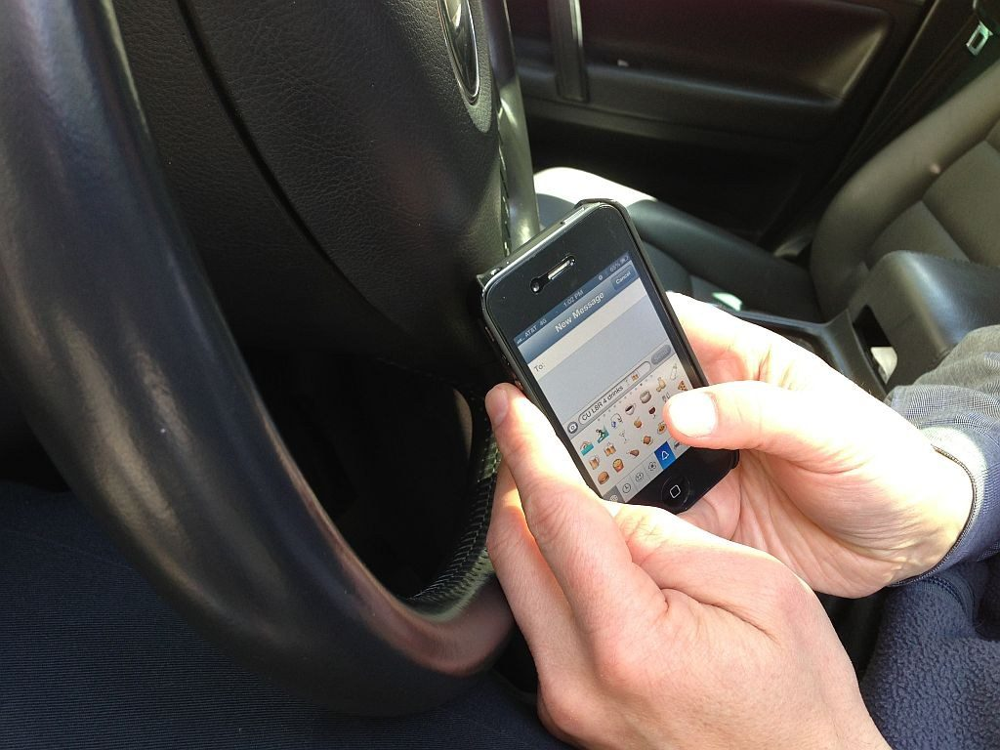
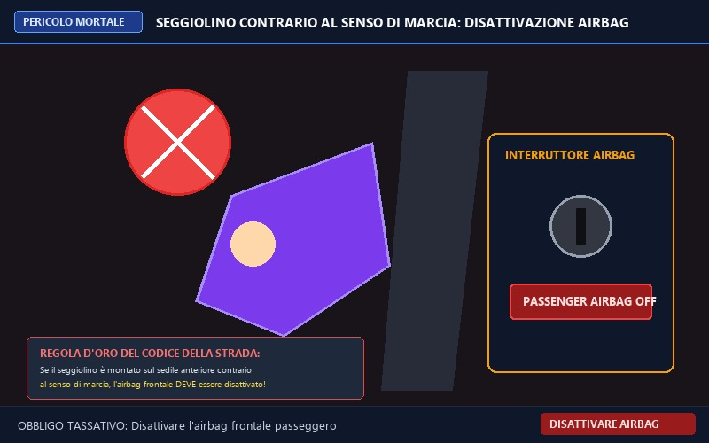
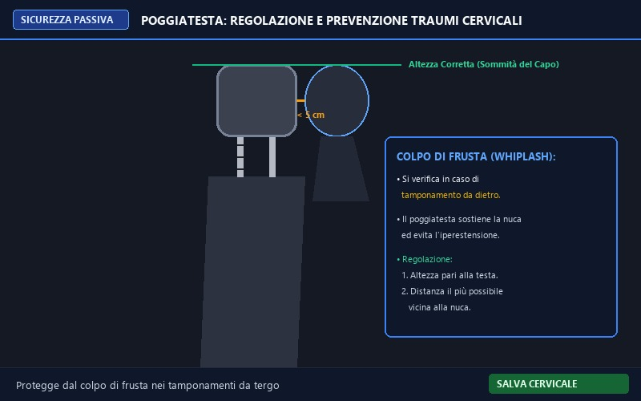
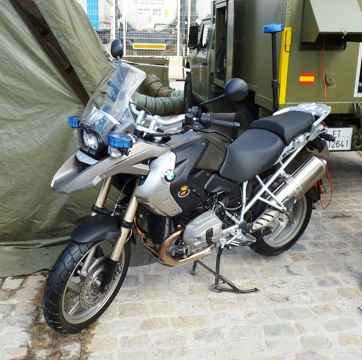

الباب 19: أحزمة الأمان، الخوذة، مقاعد الأطفال والملابس الواقية
الدليل الهندسي والطبي الشامل لأجهزة السلامة السلبية في المركبة والدراجات النارية: إلزامية أحزمة الأمان ثلاثية النقاط وجهاز الشد المسبق (Pretensionatore)، آلية عمل الوسائد الهوائية (Airbag)، القواعد الصارمة لمقاعد الأطفال وقاعدة الـ 1.50 متراً وأنظمة ISOFIX، شروط الخوذة الواقية المعتمدة (ECE 22.06) ووجوب استبدالها بعد الحوادث، والملابس الواقية المعتمدة لراكبي الدراجات النارية.
📸 المشاهد الميدانية ومعدات السلامة والاعتمادات الأوروبية
معرض توثيقي عالي الدقة يوضح ملصقات الاعتماد الرسمية، تثبيت أيزوفيكس، ومفاتيح الإيرباج

ملصق وزارة النقلملصق اعتماد الخوذة (Omologazione ECE 22.06)
الملصق القماشي الإلزامي داخل الخوذة؛ حرف E داخل دائرة متبوعاً برقم الدولة (E3 إيطاليا) ورقم اللائحة 06 وحرف P الدال على الفك الواقي.

تثبيت ميكانيكي صلبنقاط تثبيت أيزوفيكس والحزام العلوي (ISOFIX & Top Tether)
حلقات معدنية فولاذية ملحومة بهيكل السيارة لتثبيت مقعد الطفل مباشرة دون استخدام حزام السيارة العادي، مع خطاف الشد العلوي المضاد للانقلاب.

مفتاح إبطال الإيرباجمفتاح تعطيل الوسادة الهوائية للراكب الأمامي
مفتاح يُدار بمفتاح السيارة لإلغاء تفعيل الإيرباج الأمامي، وهو إلزام قانوني صارم عند تثبيت مقعد الرضيع عكس اتجاه السير لتفادي صدمة الانفجار.

اعتماد حزام الأمانملصق اعتماد نسيج حزام الأمان (Ar4m ECE)
ملصق برتقالي مخيط على نسيج الحزام يبين كود الاعتماد الأوروبي، ويرمز Ar4m إلى حزام ثلاثي النقاط مزود بملف شد مسبق تلقائي.

عدسة معتمدة بصرياًواقية الخوذة المعتمدة المقاومة للخدش
واقية من البولي كربونات من الفئة البصرية الأولى تمنع تشوه الرؤية؛ يُحظر تظليلها ليلاً ويجب استبدالها فور تعرضها لخدوش تشتت أضواء السيارات.

شهادة CE الأوروبيةملصق فحص الملابس الواقية للموتوسيكل (CE EN 17092)
بطاقة المطابقة الأوروبية التي تثبت اجتياز الجاكيت والبنطال لاختبارات مقاومة الاحتكاك والتمزق وتوفر حشوات حماية معتمدة للمفاصل والظهر.
📖 البطاقات الفنية لأجهزة الأمان والوقاية المعتمدة
تحليل وزاري دقيق يوضح الحالات المعتمدة والأفخاخ الشائعة لكل موضوع

أحزمة الأمان ثلاثية النقاط
Le cinture di sicurezza- ✅ إلزامية الاستخدام لجميع الركاب في المقاعد الأمامية والخلفية على حد سواء.
- ✅ تمنع قذف الركاب للأمام أو خارج المركبة عند التوقف المفاجئ أو الاصطدام.
- ✅ تقلل بشدة من خطر الاصطدام بعجلة القيادة أو لوحة العدادات أو الزجاج الأمامي.
- ❌ يزعم أنها غير إلزامية في المقاعد الخلفية إذا كانت السرعة داخل المدينة (FALSO، إلزامية دائماً).
- ❌ يزعم جواز فك الحزام إذا كانت السيارة مزودة بوسائد هوائية Airbag (خطأ قاتل).

جهاز الشد المسبق لأحزمة الأمان
Il pretensionatore delle cinture- ✅ جهاز أمان يعمل ميكانيكياً أو كيميائياً (شحنة بارود) عند حدوث اصطدام عنيف.
- ✅ يشد شريط حزام الأمان بقوة ويلصق جسد الراكب بالمقعد قبل اندفاعه للأمام.
- ✅ يعمل لمرة واحدة فقط ويجب استبداله فوراً بعد أي حادث اصطدام حتى لو بدا سليماً ظاهرياً.
- ❌ يزعم أنه جهاز يمكن إعادة ضبطه يدوياً بعد الحادث واستخدامه مرة أخرى (FALSO، يستبدل كلياً).
- ❌ يزعم أنه يعمل فقط إذا كانت السيارة تسير بسرعة تفوق 100 كم/س (FALSO، يعمل عند أي صدمة عنيفة).

الوسادة الهوائية الأمامية والجانبية
L'airbag (Cuscino salvavita)- ✅ كيس نسيجي ينتفخ بغاز غير ضار خلال أجزاء من الألف من الثانية عند استشعار صدمة قوية.
- ✅ يعمل بتكامل تام مع حزام الأمان ولا يعتبر بديلاً عنه على الإطلاق.
- ✅ يفرغ الغاز تلقائياً وبسرعة فور انتفاخه لتجنب خنق الراكب والسماح له بالرؤية والخروج.
- ❌ يزعم أن الوسادة الهوائية تغني عن ربط حزام الأمان (FALSO، عدم ربط الحزام مع الإيرباج يسبب الوفاة).
- ❌ يزعم انتفاخها في كل مرة يتم فيها الضغط بقوة على الفرامل (FALSO، تنتفخ عند الصدمات فقط).

مقاعد الأطفال وقاعدة الـ 1.50 متراً
Sistemi di ritenuta per bambini (Statura < 1,50 m)- ✅ إلزامية استخدام مقاعد ونظم حماية معتمدة للأطفال الذين يقل طولهم عن **1.50 متراً**.
- ✅ مقياس الإلزام القانوني الصارم هو **طول القامة** وليس العمر وحده.
- ✅ يجب أن تكون المقاعد معتمدة ومطابقة لمواصفات اللوائح الأوروبية وتناسب وزن وبنية الطفل.
- ❌ يزعم أن الطفل يعفى من المقعد المخصص إذا أتم سن العاشرة حتى لو كان طوله 1.30م (FALSO).
- ❌ يزعم جواز جلوس الطفل في حجر شخص بالغ يربط الحزام حولهما معاً (خطر مميت ومخالفة جسيمة).

مقعد الرضيع عكس اتجاه السير وإلغاء الإيرباج
Seggiolino contrario al senso di marcia- ✅ عند تثبيت مقعد الطفل بالمقعد الأمامي وهو متجه للخلف، **يلزم حتماً إبطال تفعيل الوسادة الهوائية للراكب**.
- ✅ عدم إبطال الوسادة الهوائية قد يؤدي لانفجارها بقوة هائلة تصطدم بظهر المقعد وتقتل الرضيع.
- ✅ بعد إزالة مقعد الرضيع، يجب إعادة تفعيل الوسادة الهوائية لحماية الركاب البالغين.
- ❌ يزعم ترك الوسادة الهوائية نشطة لحماية المقعد من الأمام (خطأ كارثي).
- ❌ يزعم منع وضع مقعد الطفل في المقعد الأمامي في جميع الأحوال (FALSO، مسموح بشرط إطفاء الإيرباج).

مسند الرأس والوقاية من صدمة الارتداد العنقي
Il poggiatesta (Prevenzione colpo di frusta)- ✅ جهاز أمان مصمم لحماية فقرات الرقبة من الارتداد الخطير للخلف (Colpo di frusta) عند التعرض لصدمة خلفية.
- ✅ يجب ضبط ارتفاعه بدقة بحيث تحاذي حافته العلوية قمة رأس الراكب أو مستوى العينين.
- ✅ ليس مجرد وسيلة راحة للنوم أو الاسترخاء بل هو عنصر أمان سلبي حيوي.
- ❌ يزعم أنه مصمم فقط لراحة الرأس أثناء القيادة في الرحلات الطويلة (FALSO، لحماية الرقبة من الكسر).
- ❌ يزعم وضعه عند مستوى الرقبة من الأسفل (FALSO، يجب أن يحاذي قمة الرأس).

الخوذة الواقية المعتمدة للدراجات
Il casco protettivo omologato- ✅ إلزامية لقائد وراكب جميع الدراجات الصغيرة (Ciclomotori) والدراجات النارية (Motocicli).
- ✅ يجب أن تكون من طراز معتمد رسمياً وتحمل علامة المطابقة الأوروبية (Omologazione).
- ✅ يلزم ربط وقفل حزام التثبيت بإحكام تام؛ فالخوذة المفكوكة تعتبر قانونياً كعدم ارتدائها.
- ❌ يزعم إعفاء السائق من الخوذة إذا كان بالغاً ويقود دراجة صغيرة داخل الحي السكني (FALSO، إلزامية للجميع).
- ❌ يزعم جواز استخدام خوذات التزلج أو الدراجات الهوائية على الدراجات النارية (FALSO وممنوع).

استبدال الخوذة بعد التعرض لصدمة
Sostituzione del casco dopo un urto- ✅ يجب استبدال الخوذة فوراً بعد تعرضها لصدمة قوية أو سقوط عنيف حتى وإن لم يظهر كسر خارجي.
- ✅ بطانة البوليسترين الداخلية المضغوطة تتلف وتمتص الصدمة لمرة واحدة فقط وتفقد كفاءتها.
- ✅ يجب تنظيف قناع الخوذة (Visiera) بماء فاتر وقطعة قماش ناعمة غير كاشطة للحفاظ على الرؤية.
- ❌ يزعم أنه يمكن مواصلة استخدام الخوذة بعد الحادث طالما أن الهيكل الخارجي سليم ولم ينكسر (خطأ جسيم).
- ❌ يزعم تنظيف واقية الوجه بمواد كحولية مذيبة أو بنزين (يسبب عتامة القناع وتلفه).

قفازات قيادة الدراجات النارية المعتمدة
Guanti ad uso motociclistico (Norma EN 13594)- ✅ مصممة خصيصاً لحماية اليدين والمعصم من التسلخ والاحتكاك العنيف بالإسفلت عند الانزلاق.
- ✅ تحتوي على تصفيح صلب لحماية مفاصل الأصابع (Nocche) وعظمة الزورق (Scafoide) من الكسور.
- ✅ تضمن إحكام القبضة على مقود الدراجة وتحافظ على الحساسية الدقيقة لأذرع الفرامل والدبرياج.
- ✅ تحمي من برودة الطقس والعوامل الجوية التي قد تفقد الأصابع حركتها وسرعة رد فعلها.
- ❌ 🚫[FALSO] يمكن استبدال قفازات الموتوسيكل بقفازات الصوف العادية أو قفازات العمل المنزلي.
- ❌ 🚫[FALSO] قفازات الدراجات تمنع حركة الأصابع وتلغي القدرة على الضغط على الفرامل.

أحذية الدراجات النارية المقواة والمحمية
Stivali ad uso motociclistico (Norma EN 13634)- ✅ مصممة بنعل صلب مانع للالتواء ومقاوم للدهون والزيوت والانزلاق على الطرق المبتلة.
- ✅ تحمي عظام الكاحل الناتئة (Malleoli) وقصبة الساق (Tibia) من الصدمات والدهس والسحق.
- ✅ مصممة بدون أربطة حرة متدلية قد تعلق بدواسات التروس أو الفرامل أو السلسلة.
- ✅ توفر عزلاً حرارياً فعالاً يمنع الحروق الناتجة عن ملامسة أنبوب العادم أو أجزاء المحرك الساخنة.
- ❌ 🚫[FALSO] الأحذية الخفيفة ذات النعل المرن كأحذية الجري أفضل لقيادة الدراجة لسهولة تحريك القدم.
- ❌ 🚫[FALSO] أحذية الدراجات النارية إلزامية فقط على الأوتوستراد واختيارية داخل المدن.

السترة الواقية وحامي الظهر والوسائد الهوائية للدراجات
Giacca tecnica, paraschiena e airbag moto (EN 1621)- ✅ الجاكيت التقني المعتمد مصنوع من مواد مقاومة للتآكل والتمزق الشديد (Cordura أو جلد طبيعي).
- ✅ يشتمل على دعامات امتصاص صدمات معتمدة على الكتفين والمرفقين والعمود الفقري.
- ✅ حامي الظهر (Paraschiena) يمتص طاقة الصدمة ويقلل من أخطار كسور وإصابات النخاع الشوكي.
- ✅ السترات المزودة بوسادة هوائية للدراجات (Airbag Moto) تنتفخ فوراً لحماية الرقبة والقفص الصدري.
- ❌ 🚫[FALSO] حامي الظهر مخصص فقط لحلبات السباق وممنوع ارتداؤه في الطرق العادية.
- ❌ 🚫[FALSO] السترات الواقية تزيد من خطر الاختناق وتمنع الرؤية الجانبية للسائق.
الإعفاءات القانونية والطبية من ربط حزام الأمان
Esenzioni dall'obbligo delle cinture (Art. 172 C.d.S.)- ✅ يُعفى أفراد الشرطة وقوات الأمن والدفاع المدني والإسعاف عند أداء مهام طوارئ وتدخل عاجل.
- ✅ يُعفى سائقو سيارات الأجرة (Taxi) ومركبات التأجير بسائق (NCC) أثناء القيادة داخل التجمعات السكنية أثناء الخدمة.
- ✅ يُعفى مدربو القيادة (Istruttori di guida) أثناء مرافقة المتدرب خلال حصص التدريب العملي.
- ✅ الحوامل والأشخاص ذوو الحالات المرضية يُعفون فقط بشرط حمل شهادة طبية رسمية من الوحدة الصحية (ASL) تحدد تاريخ الصلاحية.
- ❌ 🚫[FALSO] يُعفى السائق من حزام الأمان إذا كانت سرعة السير أقل من 30 كم/ساعة أو داخل المدينة.
- ❌ 🚫[FALSO] يمكن للمرأة الحامل الاستغناء عن الحزام بتقرير شفهي أو دون شهادة من الوحدة الصحية ASL.
- ❌ 🚫[FALSO] سائق التاكسي معفى دائماً من الحزام حتى خارج المدينة أو أثناء رحلاته الخاصة بدون ركاب.
⚠️ أخطر 12 فخاً وزارياً في الباب 19
الأسئلة الأكثر خداعاً في الامتحانات الرسمية مع بيان سبب الخطأ والصواب هندسياً وقانونياً